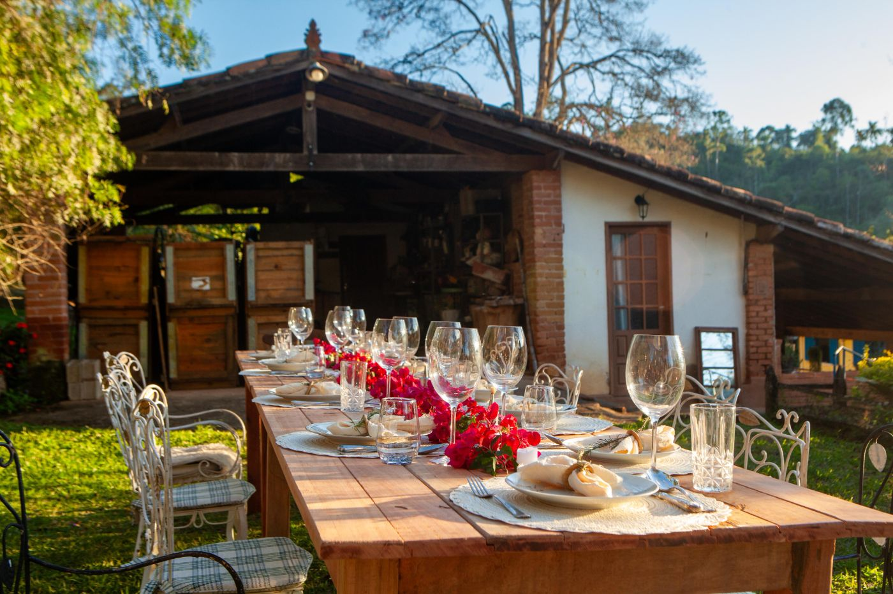
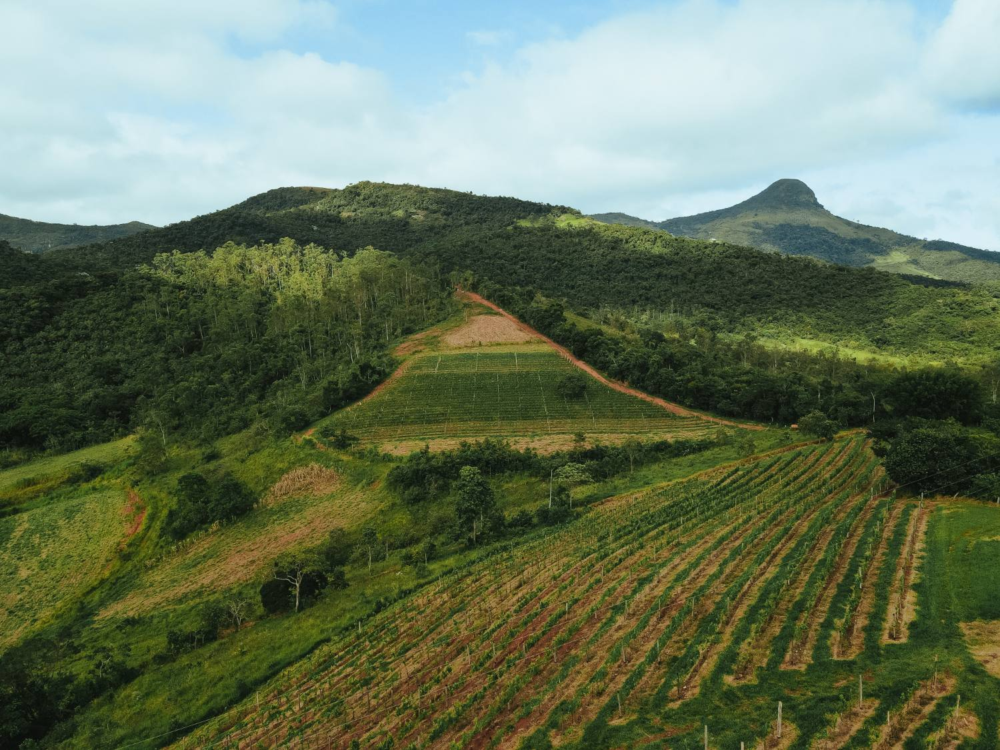
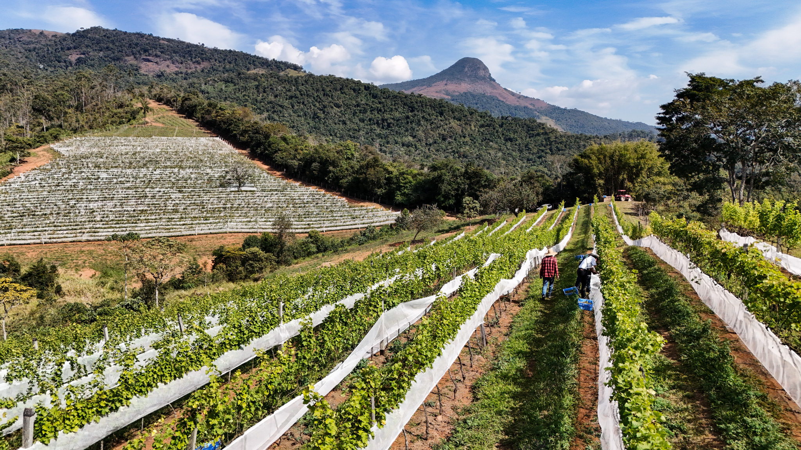
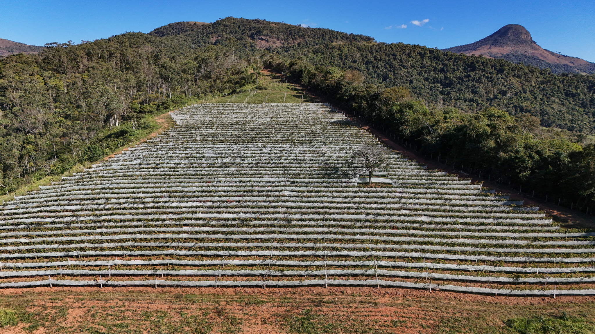
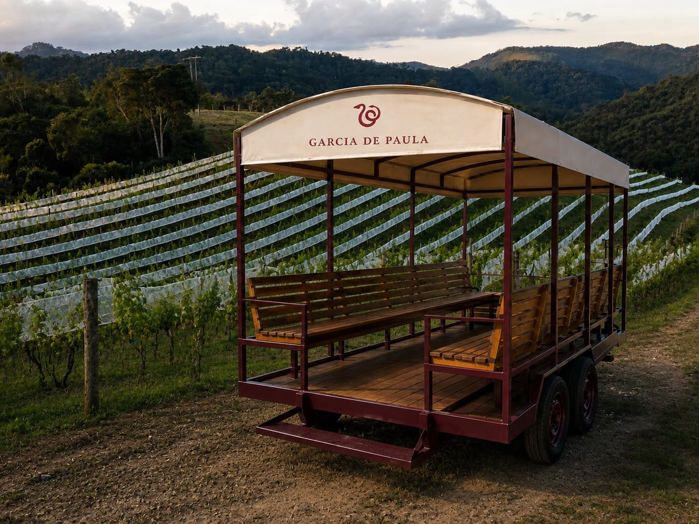
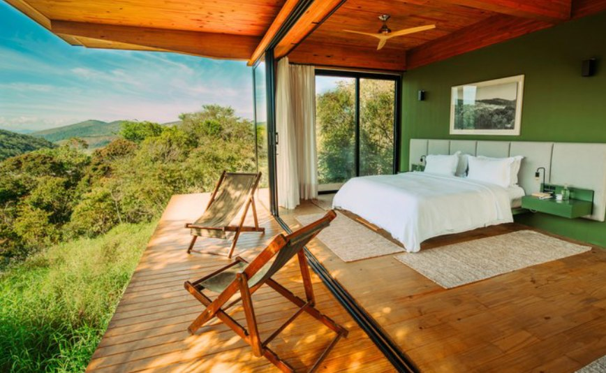
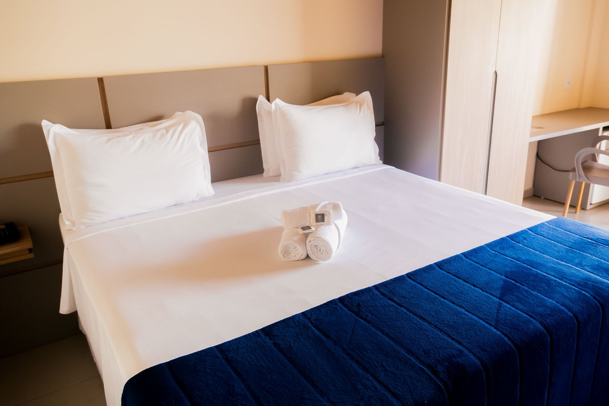
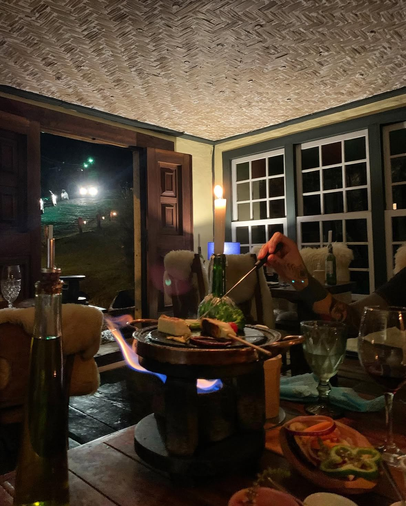
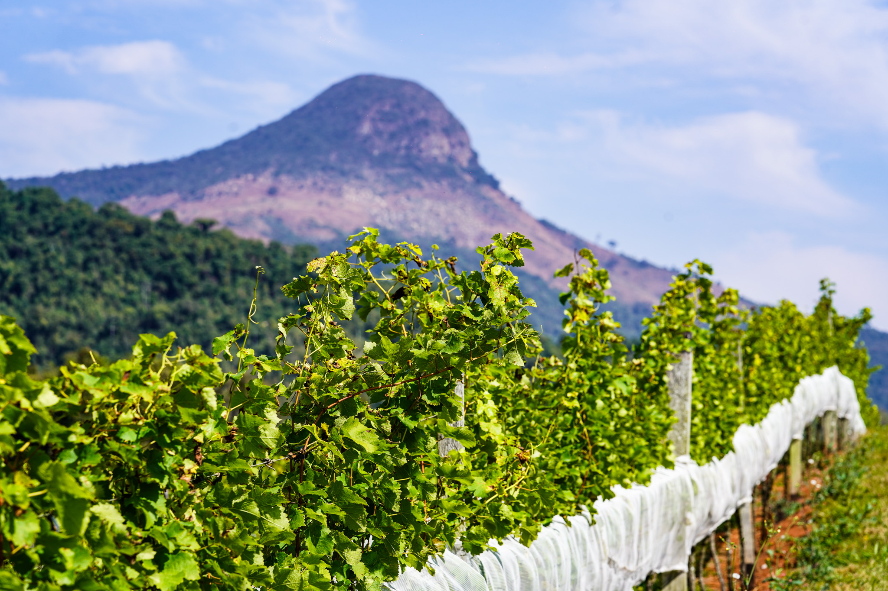

Algumas horas
Experiência Garcia de Paula
Uma visita intimista para conhecer território, história familiar, vinhedos e vinhos com degustação conduzida.

Lima Duarte / Serra da Ibitipoca - MG
Serra do Ibitipoca
Vinho, território e uma nova forma de viver a Serra. Da visita ao vinhedo a uma estadia sem pressa, cada roteiro aproxima pessoas, paisagem e história.
O convite
A Garcia de Paula recebe pequenos grupos para experiências desenhadas com calma: algumas horas na vinícola, um dia inteiro entre a propriedade e Ibitipoca, ou uma viagem completa com hospedagem, mesa e paisagem.
Experiências

Algumas horas
Uma visita intimista para conhecer território, história familiar, vinhedos e vinhos com degustação conduzida.

Um dia inteiro
Uma jornada que começa na Garcia de Paula e segue por Ibitipoca, reunindo natureza, arte, gastronomia e brinde ao pôr do sol.

Quero ficar mais
Combine vinhos, hospedagem e pequenos roteiros pela região para transformar a visita em uma viagem completa.

Território
A propriedade fica em Lima Duarte, aos pés da Mantiqueira, em uma paisagem marcada pelo Pão de Angu, pela altitude e pelo inverno seco de Minas.
A experiencia


Os vinhos

Um tinto de altitude, nascido da colheita de inverno e batizado com nome de família.

Um branco fresco, mineral e luminoso, pensado para acompanhar a paisagem da Serra.
Estadias e região
Hospedagens, mesas e lugares especiais na Serra podem compor um roteiro sob medida para casais, famílias e pequenos grupos.

Casas e suítes na Vila do Mogol, com natureza, arte e gastronomia.

No centro de Lima Duarte, uma base prática para explorar a vinícola e Ibitipoca.

Mesas parceiras e experiências gastronômicas ajudam a fechar o roteiro.

Planeje sua visita
Conte quantas pessoas vêm, quando pretende viajar e quanto tempo quer permanecer. A equipe Garcia de Paula retorna com o melhor roteiro disponível.
Chamar no WhatsApp